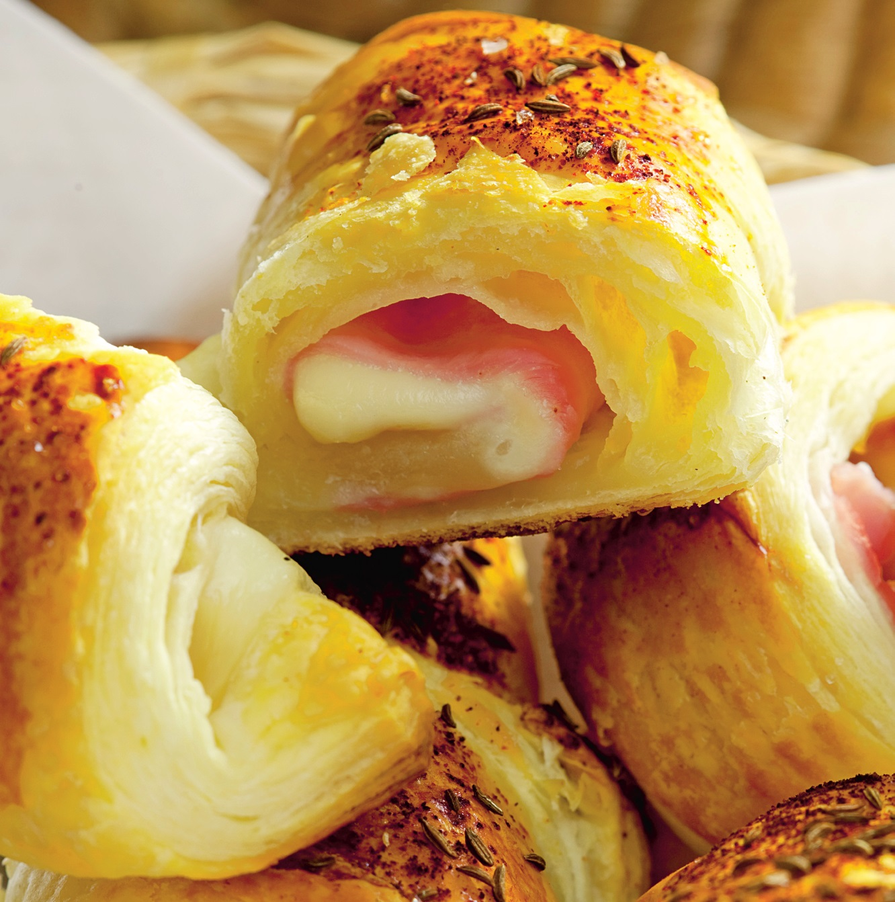

Croissante cu sunca si cascaval

- Aluatul de foitaj decongelat se intinde pe masa usor presarata cu faina.
- Se acopera apoi cu sunca peste care se asaza feliile de cascaval.
- Se acopera apoi cu sunca peste care se asaza feliile de cascaval.
- Se transfera in tava de copt, se ung cu galbenus amestecat cu lapte, se presara cu boia si chimen si se dau la cuptor 20 de minute.